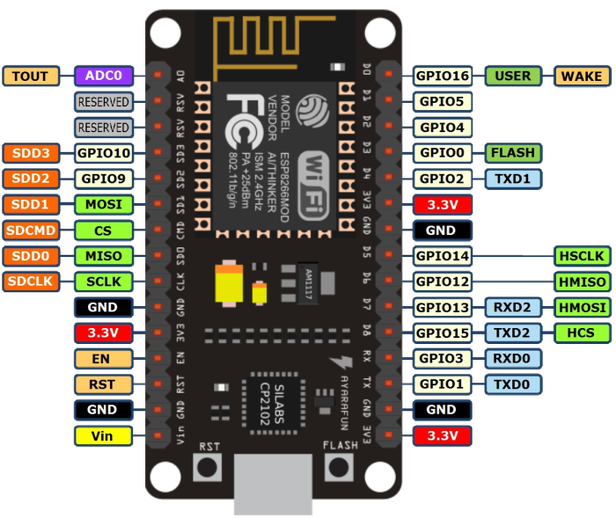
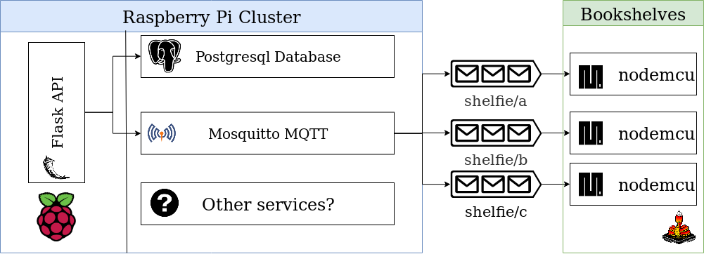

Shelfie
Building a Physical Inventory Search Engine
Vinay Keerthi
My bookshelf runs on Python

What do you mean your Bookshelf runs Python?
Admission: I Own Over a 1000 Books
Seriously, it's hard to keep count.
And I'm not the most organized of people.
But couldn't you just use one of the following:
- Physical Notebooks: Too troublesome to carry
- Spreadsheets: Easy at first, too difficult to sync.
Also Google Sheets on the phone? 🤮
- Goodreads: Annoying API. Seriously, Amazon, what the hell?
- LibraryThing: Free account has a limit of 250 books. Plus by this point I want the index to be local
I also own a lot of tech
I think the AliExpress people know me well
I ended up with a slightly over-engineered solution
I built a search engine for my bookshelf, using RGB LEDs
Introduction to Micropython

What is MicroPython?
- Python for Microcontrollers
- Seriously, you can run Python on tiny boards.
- Tiny, includes a subset of CPython's libraries
Getting Started with MicroPython
- Buy an ESP8266 or ESP32 based Chip (Available on Amazon / AliExpress)
- Flash MicroPython firmware
- Profit???
Nodemcu



Nodemcu
- Based on the ESP8266 Wi-Fi SoC
- Runs Lua out of the box
- Can install MicroPython firmware
- Supports WiFi (2GHz only)
- Has 128kB RAM and 4MB ROM
- USB Interface
- Costs between INR 140 to INR 400 (or around 3-4 Euros) depending on where you get it from.
Flashing MicroPython
- Download Suitable Firmware
- Setup Virtual Environment
- Run pip install esptool
- Add current user to dialout group (linux)
- Flash firmware: $ esptool.py --port /dev/ttyUSB0 --baud 115200 write_flash --flash_size=detect 0 esp8266-20190529-v1.11.bin
Getting Up and Running
You Don't need to be Hackerman: Introducing the WebREPL
- Use picocom to activate the webREPL.
- Protip: screen /dev/ttyUSBx 115200 does the job better since it's easier to exit out of.
- Connect to the ESP's WiFi
- Use WebREPL to test out MicroPython
Activating the WebREPL
Using the WebREPL
### Uploading Scripts using the webREPL CLI
```
webrepl_cli.py -p PASSWORD local_file.py \
IP:/destination.py
```
Lifecycle of a MicroPython Program
- Very similar to Arduino
- First: boot.py
- (optional) webrepl_cfg.py
- Finally: main.py
Shelfie
Hardware
- ESP8266: 3 Nos.
- Raspberry Pi 3B+: 1 Nos.
- Raspberry Pi Zero W: 4 Nos.
- Raspberry Pi Cluster Hat v2.2: 1 No.
- WS2812B Addressable RGB LED Strips: 10 meter
Architecture

Communicating with the ESP8266: The MQTT Protocol
- A Lightweight Protocol for <buzzword>IoT</buzzword>
- Message Queuing Telemetry Transport
- Use Eclipse Mosquitto for simplicity.
- Use the mqtt library in MicroPython, topics can be split using slashes.
MQTT Demo

WS2812B LED Strips

WS2812B LED Strips
Shelfie Server
CRUD! He's used Flask
Flask
- Lightweight and completely customizable.
- Easy to hack around with, nothing is predetermined.
- Simple is better than complex.
- Explicit is better than implicit.
- psycopg2 + flask_migrate + flask_sqlalchemy
DB Table Schema

UI with Flask-Admin

Indexing

Position
- m:n.x, where m = column start, n = column end, x = row.
- Indexing books the first time was difficult, but now I can place books anywhere and the bookshelf can remember them.
- The shelf enables my lack of organization.
Alpha Stage Demos
Blink, blink
What's Capacitance, Doc?
Improving Control
Indexing Books
The Prototype
curl -x GET http://server/api/v1/book/?title=the%20decline%20and%20fall
You curl for books?
That's boring!
Not exactly.
I said I wanted to ask my bookshelves for books.
So, I added another service.
Shelfie Voice
Enter Alexa
Building a Voice API with Flask
- Flask_Ask is a great extension that enables Alexa skills.
- To run on a local server with access to the other API, use with ngrok.
- Can also be configured on AWS, if you want to avoid buying a Raspberry Pi cluster. (Why would you do that?)
Voice Server Architecture
Code

Amazon Developer Page: Configuring The Skill
Amazon Developer Page: Configuring The Query Variable
Protip: When you want a raw string: use AMAZON.SearchQuery
Caveats
- A bit slow, could work better on AWS native instead of my ngrok hack
- Direct integration with the shelf server might be faster
- Other libraries to consider: AWS's own library for Alexa.
- Flask_Ask is poorly packaged. Has dependencies locked to older versions of cryptography
Now Presenting: Shelfie, The Bookshelf Search Engine
In your door! In your door, would you, could you, in the door?
What if there are books behind books?
I'm glad you asked.
Future Upgrades
Improved Interfaces
- Web UI with flask_wtf
- Telegram Bot
- Bookshelf metrics: visualize read-count, days since last read stats with LEDs!
- Dialogue flow for Alexa skills.
- Use spacy for NLP
Challenges to a MicroPython Project
- Poor learning material
- No examples for best practises
- Need some competence with electronics.
- Procuring components (depends on location)
Vinay Keerthi
- Sr. Software Engineer @ Visa Inc.
- @stonecharioteer
- stonecharioteer.com
- github.com/stonecharioteer
- github.com/bookshelfie